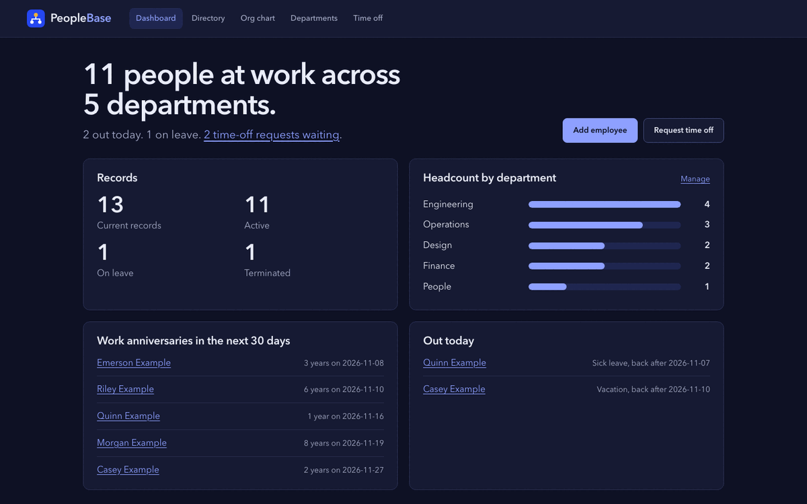

A small HR system you can read in one sitting.
PeopleBase keeps employee records, departments, reporting lines, pay history and time off for a small team. It is one Flask file, a handful of templates and a test suite that covers every rule.

What it keeps track of
The everyday records a people lead at a small company needs, and nothing that needs a vendor contract.
- Employee records
- Name, job title, salary, department, manager, start date and status: active, on leave or left.
- Reporting lines
- Pick a manager for anyone. Loops and self-management are refused, and the org chart draws the result.
- Compensation history
- Every title or salary change is kept with its effective date and reason, newest first on the profile.
- Time off
- Requests with dates, type and a note. The person's manager approves or denies; overlaps are caught.
- Dashboard
- Who is at work, headcount by department, anniversaries in the next 30 days and who is out today.
- Directory and export
- Search and filter by team, title and status, with payroll totals and a CSV of exactly what you see.
192
tests run on every pull request, on Python 3.11, 3.12 and 3.13.
- Forms carry CSRF tokensChecked in constant time. Session cookies are HttpOnly and SameSite=Lax.
- A strict Content-Security-PolicyNo inline script anywhere, plus nosniff, frame denial and a 64 KiB request limit.
- Spreadsheet-safe CSVCells that start with =, +, -, @, tab or carriage return are exported as text, not formulas.
- Validation at every boundaryPlain-number salaries rounded to cents, real calendar dates, no control characters, ids the database can store.
- Upgrades in placeDatabases from earlier versions get the new columns on startup. No migration step to forget.
Run it locally
Python 3.11 or newer. The demo data uses made-up people named "Example".
git clone https://github.com/patrickking67/peoplebase.git
cd peoplebase
python3 -m venv .venv && source .venv/bin/activate
pip install -r requirements-dev.txt
export SECRET_KEY="$(python -c 'import secrets; print(secrets.token_hex(32))')"
flask --app app seed-demo # optional demo data
flask --app app run --debug # http://127.0.0.1:5000
./scripts/check.sh # lint, tests and repo checksConfiguration
Environment variables. Only SECRET_KEY is required.
| Variable | What it does | Default |
|---|---|---|
SECRET_KEY | Signs the session cookie, flash messages and CSRF tokens | None. The app will not start without it. |
DATABASE_URL | Any SQLAlchemy database URL | SQLite at instance/employees.db |
FLASK_DEBUG | Turns on the debugger for python app.py | Off |
PeopleBase has no sign-in. Anyone who can reach it can read and change every record. Keep it on a private network with demo data, or add authentication before it holds real people.